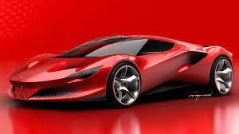
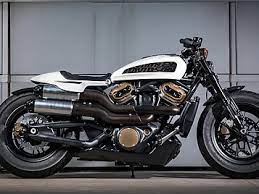
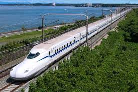

Apa itu Otomotif?



Berdasarkan Kamus Besar Bahasa Indonesia (KBBI), kata otomotif memiliki arti "berhubungan dengan sesuatu yang berputar dengan sendirinya". Pemaknaan tersebut berasal dari kata "oto" yang memiliki arti "sendiri" dan "motif" yang berarti "alasan".
Dari penjelasan tersebut kita dapat mengambil kesimpulan bahwa otomotif adalah bidang yang membahas tentang sistem kendaraan yang dapat berputar atau bergerak sendiri atau bisa disebut bermotor.
Cabang-cabang ilmu teknik otomotif
Setelah mengetahui apa itu otomotif, penting pula untuk Anda ketahui bahwa otomotif sebagai sebuah ilmu memiliki beberapa cabang. Seiring dengan perkembangan zaman, cabang ilmu otomotif pun terus berkembang. Berikut adalah beberapa cabang ilmu otomotif yang ada saat ini:
1. Perencanaan (product design)
Cabang ilmu otomotif satu ini mempelajari tentang rancangan kendaraan bermotor, dimulai dari
perumusan gagasan, bagaimana kendaraan tersebut diproduksi nantinya, cara kerja, hingga upaya untuk
merealisasikan gagasan tersebut.
2. Pengembangan (development)
Selanjutnya ada cabang perencanaan. Pada cabang ini, perencanaan yang telah disusun akan
dikembangkan agar kendaraan tetap sesuai dengan prosedur keamanan, kenyamanan, dan bahkan
tingkat efsiensinya pun diperhatikan.
3. Produksi (manufacture)
Cabang produksi menitikberatkan pada cara pembuatan kendaraan bermotor, lengkap dengan metode perakitannya hingga menjadi sebuah kendaraan yang dapat berfungsi.
4. Perawatan (maintenance)
Perawatan juga termasuk dalam apa itu otomotif dan cabang ilmunya. Sesuai namanya, cabang
perawatan berkonsentrasi pada teknik perawatan kendaraan bermotor yang sudah ada, baik itu melalui
kontrol mesin maupun penggantian suku cadang.
Contoh-contoh Otomotif:
1. Mobil
2. Perahu
3. Kereta
4. Pesawat
Untuk Penjelasannya dapat dilihat di navbar tentang detail perkembangan dari zaman awal diciptakan dan dikembangkan hingga sekarang.